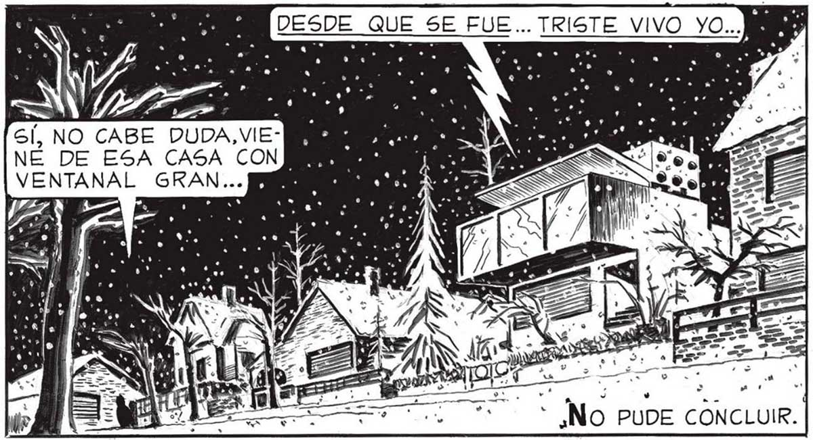

70 NO, NO PARECE RADIO... TIENE QUE SER UN DISCO... NO TE OLVIDES QUE NO HAV ELECTRICIDAD, "PUEDE SER UNA RADIO PORTATI TÚ TE QUEDAS AQUÍ, PABLO, A CUIDAR EL |. SÉ. CAMIÓN, 6 VES QUE ALGUIÉN GE ACERCA TÍRALE SIN PREGUNTAR. L”, PENPERO NI LLEGUE A DECIR NADA .. >, LASVIVIENTES! K * e | a 4 Í LA vOZz, SEGUÍA ys DESGRANANDO É2LA CANCIÓN, MAS ¿NO SERA UNA TRAMPA, FAVA 2? ES SIMPLE HACER ANDAR UN FONOGRAFO Y SENTARSE A ESPERAR . [QUE CAIGA EL PRIMER IN ..PARA BAJARLO NS CON TODA COMODIDAD DE UN BALAZO BA BA NO DEJA DE SER MN RAZONABLE LO QUE PIENSAS... Do .. AS SÍ... PARECIERA | QUE DE AQUÉLLA CASA MO¡ALLÍ PASA ALGO! ¡VAMOS JUAN! Un súBiTO FRAGOR DE CRISTALES ROTOS ESTALLO EN LA CALLE. SÍ, NO CABE DUDA,VIE- MIS NE DE ESA ed de...
